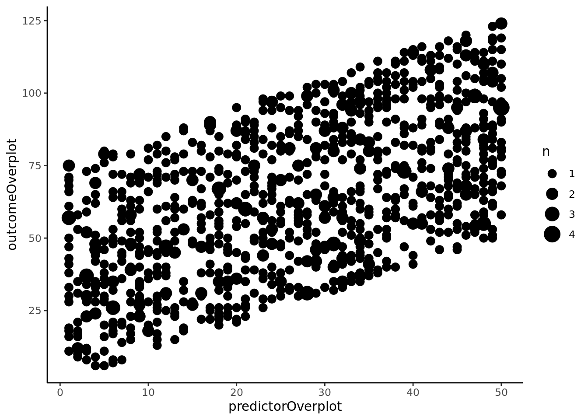
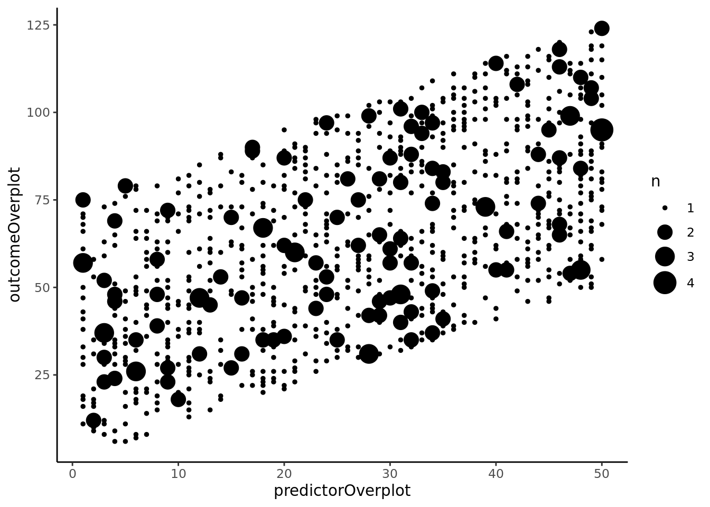
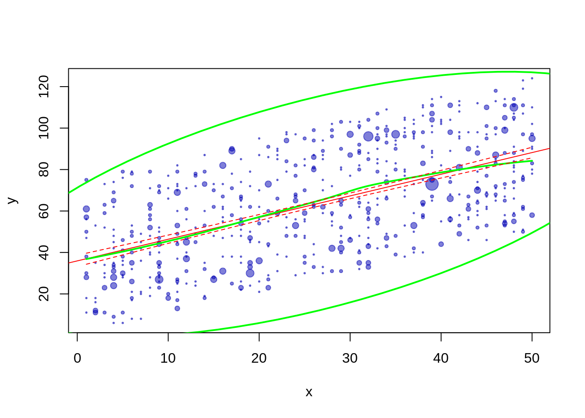
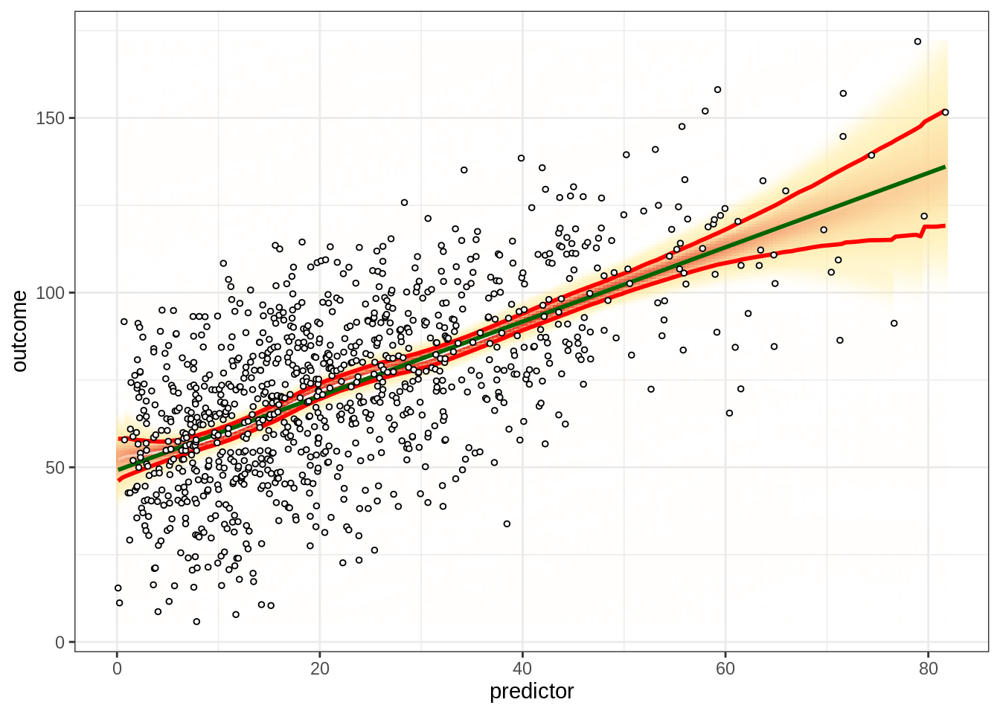
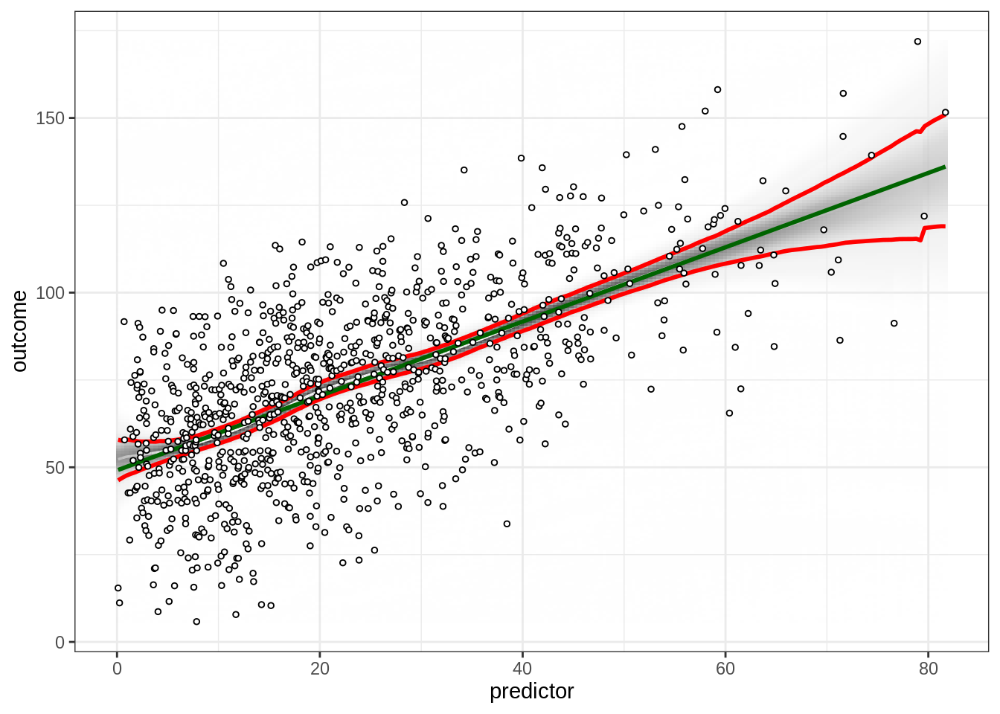

Figures in R
1 Picking a Chart Type
2 Gallery
3 Resources for Learning R Syntax for Figures
4 Petersen Lab Examples
https://research-git.uiowa.edu/PetersenLab/R-Plotting/-/tree/main/Analyses
4.1 Preamble
4.1.1 Install Libraries
#install.packages("remotes")
#remotes::install_git("https://research-git.uiowa.edu/PetersenLab/petersenlab.git")4.1.2 Load Libraries
library("petersenlab")
library("ellipse")
library("ggplot2")
library("grid")
library("reshape")
library("plyr")
library("RColorBrewer")
library("reshape2")
library("ggExtra")
library("viridis")
library("ggthemes")4.2 Simulate Data
set.seed(52242)
n <- 1000
predictor <- rbeta(n, 1.5, 5) * 100
outcome <- predictor + rnorm(n, mean = 0, sd = 20) + 50
number <- sample(1:1000, replace = TRUE)
predictorOverplot <- sample(1:50, n, replace = TRUE)
outcomeOverplot <- predictorOverplot + sample(1:75, n, replace = TRUE)
df <- data.frame(predictor = predictor,
outcome = outcome,
predictorOverplot = predictorOverplot,
outcomeOverplot = outcomeOverplot)
df[sample(1:n, size = 10), "predictor"] <- NA
df[sample(1:n, size = 10), "outcome"] <- NA
df[sample(1:n, size = 10), "predictorOverplot"] <- NA
df[sample(1:n, size = 10), "outcomeOverplot"] <- NA4.3 Basic Scatterplot
4.3.1 Base R
plot(outcome ~ predictor, data = df)
plot(df$predictor, df$outcome)
4.3.1.1 Best-fit line
plot(outcome ~ predictor, data = df)
abline(lm(outcome ~ predictor, data = df), col = "red") #regression line (y~x)
4.3.1.2 Loess line
plot(outcome ~ predictor, data = df)
lines(loess.smooth(df$predictor, df$outcome)) #loess line (x,y)
4.3.2 ggplot2
ggplot(df, aes(x = predictor, y = outcome)) +
geom_point() +
theme_classic()## Warning: Removed 19 rows containing missing values (geom_point).
4.3.2.1 Best-fit line
ggplot(df, aes(x = predictor, y = outcome)) +
geom_point() +
stat_smooth(method = "lm", formula = y ~ x) +
theme_classic()## Warning: Removed 19 rows containing non-finite values (stat_smooth).## Warning: Removed 19 rows containing missing values (geom_point).
4.3.2.2 Loess line
ggplot(df, aes(x = predictor, y = outcome)) +
geom_point() +
stat_smooth(method = "loess", formula = y ~ x) +
theme_classic()## Warning: Removed 19 rows containing non-finite values (stat_smooth).## Warning: Removed 19 rows containing missing values (geom_point).
4.4 Change Plot Style
4.4.1 Change Theme
basePlot <- ggplot(df, aes(x = predictor, y = outcome)) +
geom_point()
basePlot## Warning: Removed 19 rows containing missing values (geom_point).basePlot + theme_gray() + theme(text = element_text(family = "Gotham"))## Warning: Removed 19 rows containing missing values (geom_point).basePlot + theme_bw() + theme(text = element_text(family = "Gotham"))## Warning: Removed 19 rows containing missing values (geom_point).
basePlot + theme_linedraw() + theme(text = element_text(family = "Gotham"))## Warning: Removed 19 rows containing missing values (geom_point).
basePlot + theme_light() + theme(text = element_text(family = "Gotham"))## Warning: Removed 19 rows containing missing values (geom_point).
basePlot + theme_dark() + theme(text = element_text(family = "Gotham"))## Warning: Removed 19 rows containing missing values (geom_point).
basePlot + theme_minimal() + theme(text = element_text(family = "Gotham"))## Warning: Removed 19 rows containing missing values (geom_point).
basePlot + theme_classic() + theme(text = element_text(family = "Gotham"))## Warning: Removed 19 rows containing missing values (geom_point).basePlot + theme_void() + theme(text = element_text(family = "Gotham"))## Warning: Removed 19 rows containing missing values (geom_point).
basePlot + theme_test() + theme(text = element_text(family = "Gotham"))## Warning: Removed 19 rows containing missing values (geom_point).
basePlot + theme_tufte()## Warning: Removed 19 rows containing missing values (geom_point).
basePlot + theme_wsj()## Warning: Removed 19 rows containing missing values (geom_point).
basePlot + theme_fivethirtyeight()## Warning: Removed 19 rows containing missing values (geom_point).
basePlot + theme_economist()## Warning: Removed 19 rows containing missing values (geom_point).
basePlot + theme_few()## Warning: Removed 19 rows containing missing values (geom_point).
4.5 Add Marginal Distributions
scatterplot <- ggplot(df, aes(x = predictor, y = outcome)) +
geom_point() +
theme_classic() +
theme(text = element_text(family = "Gotham"))densityMarginal <- ggMarginal(scatterplot, type = "density", xparams = list(fill = "gray"), yparams = list(fill = "gray"))## Warning: Removed 19 rows containing missing values (geom_point).print(densityMarginal, newpage = TRUE)
histogramMarginal <- ggMarginal(scatterplot, type = "histogram", xparams = list(fill = "gray"), yparams = list(fill = "gray"))## Warning: Removed 19 rows containing missing values (geom_point).print(histogramMarginal, newpage = TRUE)
boxplotMarginal <- ggMarginal(scatterplot, type = "boxplot", xparams = list(fill = "gray"), yparams = list(fill = "gray"))## Warning: Removed 19 rows containing missing values (geom_point).print(boxplotMarginal, newpage = TRUE)
violinMarginal <- ggMarginal(scatterplot, type = "violin", xparams = list(fill = "gray"), yparams = list(fill = "gray"))## Warning: Removed 19 rows containing missing values (geom_point).print(violinMarginal, newpage = TRUE)
densigramMarginal <- ggMarginal(scatterplot, type = "densigram", xparams = list(fill = "gray"), yparams = list(fill = "gray"))## Warning: Removed 19 rows containing missing values (geom_point).print(densigramMarginal, newpage = TRUE)
4.6 Ellipse
4.6.1 Basic Ellipse
ggplot(df, aes(x = predictor, y = outcome)) +
geom_point() +
stat_ellipse(alpha = 0.4, level = 0.95, geom = "polygon", fill = "red", color = "red") +
theme_classic() +
theme(text = element_text(family = "Gotham"))## Warning: Removed 19 rows containing non-finite values (stat_ellipse).## Warning: Removed 19 rows containing missing values (geom_point).
4.6.2 Align Coordinates
ggplot(df, aes(x = predictor, y = outcome)) +
geom_point() +
stat_ellipse(alpha = 0.4, level = 0.95, geom = "polygon", fill = "red", color = "red") +
scale_x_continuous(expand = c(0, 0)) +
scale_y_continuous(expand = c(0, 0)) +
coord_fixed(ratio = (max(predictor, na.rm = TRUE) - min(predictor, na.rm = TRUE))/(max(outcome, na.rm = TRUE) - min(outcome, na.rm = TRUE)),
xlim = c(0, max(predictor, na.rm = TRUE)),
ylim = c(0, max(outcome, na.rm = TRUE))) +
theme_classic() +
theme(text = element_text(family = "Gotham"))## Warning: Removed 19 rows containing non-finite values (stat_ellipse).## Warning: Removed 19 rows containing missing values (geom_point).
4.6.3 Reduce Dot Size
ggplot(df, aes(x = predictor, y = outcome)) +
geom_point(size = 0.5) +
stat_ellipse(alpha = 0.4, level = 0.95, geom = "polygon", fill = "red", color = "red") +
scale_x_continuous(expand = c(0, 0)) +
scale_y_continuous(expand = c(0, 0)) +
coord_fixed(ratio = (max(predictor, na.rm = TRUE) - min(predictor, na.rm = TRUE))/(max(outcome, na.rm = TRUE) - min(outcome, na.rm = TRUE)),
xlim = c(0, max(predictor, na.rm = TRUE)),
ylim = c(0, max(outcome, na.rm = TRUE))) +
theme_classic() +
theme(text = element_text(family = "Gotham"))## Warning: Removed 19 rows containing non-finite values (stat_ellipse).## Warning: Removed 19 rows containing missing values (geom_point).
4.6.4 Transparency
ggplot(df, aes(x = predictor, y = outcome)) +
geom_point(alpha = 0.3) +
stat_ellipse(alpha = 0.4, level = 0.95, geom = "polygon", fill = "red", color = "red") +
scale_x_continuous(expand = c(0, 0)) +
scale_y_continuous(expand = c(0, 0)) +
coord_fixed(ratio = (max(predictor, na.rm = TRUE) - min(predictor, na.rm = TRUE))/(max(outcome, na.rm = TRUE) - min(outcome, na.rm = TRUE)),
xlim = c(0, max(predictor, na.rm = TRUE)),
ylim = c(0, max(outcome, na.rm = TRUE))) +
theme_classic() +
theme(text = element_text(family = "Gotham"))## Warning: Removed 19 rows containing non-finite values (stat_ellipse).## Warning: Removed 19 rows containing missing values (geom_point).
4.7 Bubble Chart
4.7.1 Basic Bubble Chart
ggplot(df, aes(x = predictorOverplot, y = outcomeOverplot)) +
geom_count(aes(size = ..n..)) +
scale_size_area() +
theme_classic() +
theme(text = element_text(family = "Gotham"))## Warning: Removed 20 rows containing non-finite values (stat_sum).
4.7.2 Specify Sizes
ggplot(df, aes(x = predictorOverplot, y = outcomeOverplot)) +
geom_count(aes(size = ..n..)) +
scale_size_continuous(breaks = c(1, 2, 3, 4), range = c(1, 7)) +
theme_classic() +
theme(text = element_text(family = "Gotham"))## Warning: Removed 20 rows containing non-finite values (stat_sum).
4.8 2-Dimensional Density
ggplot(df, aes(x = predictor, y = outcome)) +
stat_density_2d(aes(fill = ..density..), geom = "raster", contour = FALSE) +
scale_x_continuous(expand = c(0, 0)) +
scale_y_continuous(expand = c(0, 0)) +
scale_fill_viridis() +
theme(
legend.position = "none",
text = element_text(family = "Gotham")
)## Warning: Removed 19 rows containing non-finite values (stat_density2d).
4.9 Combined Ellipse and Bubble Chart
4.9.1 ggplot2
ggplot(df, aes(x = predictorOverplot, y = outcomeOverplot)) +
geom_count(alpha = .6, color = rgb(0,0,.7,.5)) +
scale_size_continuous(breaks = c(1, 2, 3, 4), range = c(1, 7)) +
stat_smooth(method = "loess", se = TRUE, color = "green") +
stat_smooth(method = "lm") +
stat_ellipse(alpha = 0.4, level = 0.95, geom = "polygon", fill = "red", color = "red") +
scale_x_continuous(expand = c(0, 0)) +
scale_y_continuous(expand = c(0, 0)) +
coord_fixed(ratio = (max(predictorOverplot, na.rm = TRUE) - min(predictorOverplot, na.rm = TRUE))/(max(outcomeOverplot, na.rm = TRUE) - min(outcomeOverplot, na.rm = TRUE)),
xlim = c(0, max(predictorOverplot, na.rm = TRUE)),
ylim = c(0, max(outcomeOverplot, na.rm = TRUE))) +
theme_classic() +
theme(text = element_text(family = "Gotham"))## Warning: Removed 20 rows containing non-finite values (stat_sum).## `geom_smooth()` using formula 'y ~ x'## Warning: Removed 20 rows containing non-finite values (stat_smooth).## `geom_smooth()` using formula 'y ~ x'## Warning: Removed 20 rows containing non-finite values (stat_smooth).## Warning: Removed 20 rows containing non-finite values (stat_ellipse).ggplot(df, aes(x = predictorOverplot, y = outcomeOverplot)) +
geom_count(alpha = .6, color = rgb(0,0,.7,.5)) +
scale_size_continuous(breaks = c(1, 2, 3, 4), range = c(1, 7)) +
stat_smooth(method = "loess", se = TRUE, color = "green") +
stat_smooth(method = "lm") +
stat_ellipse(color = "red", size = 1.5) +
scale_x_continuous(expand = c(0, 0)) +
scale_y_continuous(expand = c(0, 0)) +
coord_fixed(ratio = (max(predictorOverplot, na.rm = TRUE) - min(predictorOverplot, na.rm = TRUE))/(max(outcomeOverplot, na.rm = TRUE) - min(outcomeOverplot, na.rm = TRUE)),
xlim = c(0, max(predictorOverplot, na.rm = TRUE)),
ylim = c(0, max(outcomeOverplot, na.rm = TRUE))) +
theme_classic() +
theme(text = element_text(family = "Gotham"))## Warning: Removed 20 rows containing non-finite values (stat_sum).## `geom_smooth()` using formula 'y ~ x'## Warning: Removed 20 rows containing non-finite values (stat_smooth).## `geom_smooth()` using formula 'y ~ x'## Warning: Removed 20 rows containing non-finite values (stat_smooth).
## Removed 20 rows containing non-finite values (stat_ellipse).
4.9.2 Other implementation
From: https://stats.stackexchange.com/questions/7899/complex-regression-plot-in-r
4.9.2.1 ggplot2
df$x <- df$predictorOverplot
df$y <- df$outcomeOverplot
xc <- with(df, xyTable(x, y))
df2 <- cbind.data.frame(x=xc$x, y=xc$y, number=xc$number)
df2$n <- cut(df2$number,c(0,1.5,2.5,Inf), labels=c(1,2,4))
df.ell <- as.data.frame(with(df, ellipse(cor(df$x, df$y, use = "pairwise.complete.obs"),
scale = c(sd(df$x, na.rm = TRUE),sd(df$y,na.rm=T)),
centre = c(mean(df$x, na.rm = TRUE), mean(df$y, na.rm = TRUE)),
level = .95)))
ggplot(data = na.omit(df2), aes(x = x, y = y)) +
geom_point(aes(size = n), alpha = .6, color = rgb(0,0,.7,.5)) +
stat_smooth(data = df, method = "loess", se = FALSE, color = "green") +
stat_smooth(data = df, method = "lm", col = "red") +
geom_path(data = df.ell, colour = "green", size = 1) +
coord_cartesian(xlim = c(-1,60), ylim = c(-1,130))## Warning: Using size for a discrete variable is not advised.## `geom_smooth()` using formula 'y ~ x'## Warning: Removed 20 rows containing non-finite values (stat_smooth).## `geom_smooth()` using formula 'y ~ x'## Warning: Removed 20 rows containing non-finite values (stat_smooth).
4.9.2.2 Base R
do.it <- function(df, type="confidence", ...) {
require(ellipse)
lm0 <- lm(y ~ x, data=df)
xc <- with(df, xyTable(x, y))
df.new <- data.frame(x=seq(min(df$x), max(df$x), 0.1))
pred.ulb <- predict(lm0, df.new, interval=type)
pred.lo <- predict(loess(y ~ x, data=df), df.new)
plot(xc$x, xc$y, cex=xc$number*1/4, xlab="x", ylab="y", ...) #change number*X to change dot size
abline(lm0, col="red")
lines(df.new$x, pred.lo, col="green", lwd=2)
lines(df.new$x, pred.ulb[,"lwr"], lty=2, col="red")
lines(df.new$x, pred.ulb[,"upr"], lty=2, col="red")
lines(ellipse(cor(df$x, df$y), scale=c(sd(df$x),sd(df$y)),
centre=c(mean(df$x),mean(df$y)),level=.95), lwd=2, col="green")
invisible(lm0)
}
df3 <- na.omit(df[sample(nrow(df), nrow(df), rep = TRUE),])
df3$x <- df3$predictorOverplot
df3$y <- df3$outcomeOverplot
do.it(df3, pch = 19, col = rgb(0,0,.7,.5))
4.10 Visually-Weighted Regression
4.10.1 Default
vwReg(outcome ~ predictor, data = df)
4.10.2 Shade
vwReg(outcome ~ predictor, data = df, shade = TRUE, spag = FALSE, show.lm = TRUE, show.CI = TRUE, bw = FALSE, B = 1000, quantize = "continuous")
vwReg(outcome ~ predictor, data = df, shade = TRUE, spag = FALSE, show.lm = TRUE, show.CI = TRUE, bw = FALSE, B = 1000, quantize = "SD")
4.10.3 Spaghetti
vwReg(outcome ~ predictor, data = df, shade = FALSE, spag = TRUE, show.lm = TRUE, show.CI = TRUE, bw = FALSE, B = 1000)## Warning: Removed 3586 row(s) containing missing values (geom_path).
vwReg(outcome ~ predictor, data = df, shade = FALSE, spag = TRUE, show.lm = FALSE, show.CI = FALSE, bw = FALSE, B = 1000)## Warning: Removed 2968 row(s) containing missing values (geom_path).4.10.4 Black/white
vwReg(outcome ~ predictor, data = df, shade = TRUE, spag = FALSE, show.lm = TRUE, show.CI = TRUE, bw = TRUE, B = 1000, quantize = "continuous")
vwReg(outcome ~ predictor, data = df, shade = TRUE, spag = FALSE, show.lm = TRUE, show.CI = TRUE, bw = TRUE, B = 1000, quantize = "SD")
vwReg(outcome ~ predictor, data = df, shade = FALSE, spag = TRUE, show.lm = TRUE, show.CI = TRUE, bw = TRUE, B = 1000, quantize = "SD")## Warning: Removed 3318 row(s) containing missing values (geom_path).5 Graphic Design Principles for Data Visualization
6 Types of Plots
6.1 Univariate Distribution
Used for: distribution of one numeric variable
6.1.1 Gallery
- Violin chart: https://r-graph-gallery.com/violin.html
- Density chart: https://r-graph-gallery.com/density-plot.html
- Histogram: https://r-graph-gallery.com/histogram.html
- Boxplot: https://r-graph-gallery.com/boxplot.html
- Ridgeline chart: https://r-graph-gallery.com/ridgeline-plot.html
6.2 Bivariate Scatterplots
Used for: association between two numeric variables
6.2.1 Base R
plot(x, y)6.2.2 ggplot2 package
http://www.cookbook-r.com/Graphs/Scatterplots_(ggplot2)/
ggplot(data, aes(x, y)) +
geom_point()6.2.3 Gallery
- Scatterplot: https://r-graph-gallery.com/scatterplot.html
- Bubble plot: https://r-graph-gallery.com/bubble-chart.html
- 2D density chart: https://r-graph-gallery.com/2d-density-chart.html
- Heatmap: https://r-graph-gallery.com/heatmap.html
6.2.4 Add lines
- Line chart: https://r-graph-gallery.com/line-plot.html
- Connected scatterplot: https://r-graph-gallery.com/connected-scatterplot.html
- Visually-weighted regression: http://www.nicebread.de/visually-weighted-watercolor-plots-new-variants-please-vote
- Use the
vwReg()function from thepetersenlabpackage: https://research-git.uiowa.edu/PetersenLab/petersenlab/-/blob/master/R/vwReg.R
6.2.5 Area
- Area chart: https://r-graph-gallery.com/area-chart.html
- Stacked area chart: https://r-graph-gallery.com/stacked-area-graph.html
- Streamgraph: https://r-graph-gallery.com/streamgraph.html
6.3 Bivariate Barplots
Used for: association between one categorical variable and one numeric variable (or for depicting the frequency of categories of a categorical variable)
6.3.1 Gallery
- Barplot: https://r-graph-gallery.com/barplot.html
- Lollipop plot: https://r-graph-gallery.com/lollipop-plot.html
6.4 Multivariate Correlation Matrices
Used for: association between multiple numeric variables
For correlation matrices, I do the following:
- I use the lab’s
cor.table()function (withtype = "manuscript") from thepetersenlabpackage to create a correlation matrix. - I save the correlation matrix to a
.csvfile. - I open the .csv file in Excel and create the table in Excel that can be copied and pasted to Word/Powerpoint/etc.
6.4.1 Correlograms
corrplotpackage: https://cran.r-project.org/web/packages/corrplot/vignettes/corrplot-intro.htmlcorrgrampackage: https://cran.r-project.org/web/packages/corrgram/vignettes/corrgram_examples.html
6.4.1.1 Gallery
6.4.2 Pairs panels
psych package: https://personality-project.org/r/psych/help/pairs.panels.html
I depict examples of correlograms and pairs panels here: https://isaactpetersen.github.io/Principles-Psychological-Assessment/factor-analysis-PCA.html#correlations
6.5 Path Diagrams
Used for: SEM/CFA/path analysis
If you are just trying to visualize the results of a SEM model fitted using the lavaan package, I recommend the semPlot package (http://sachaepskamp.com/semPlot/examples) in R. You can see examples of my implementation here: https://isaactpetersen.github.io/Principles-Psychological-Assessment/sem.html#path-diagram-1
If you are trying to create a figure for a paper or poster, you might want something that you can draw and customize yourself. I use Adobe Illustrator for hand-drawn figures.
You can look at various options below:
semPlotpackageAdobe IllustratorOnyx: https://onyx-sem.comyworks: https://www.yworks.comMicrosoft Visio: https://www.microsoft.com/en-us/microsoft-365/visio/flowchart-softwareAMOSWarpplsGraphviz: https://graphviz.org- has an R port—this is what we use for our study flowchart via the DiagrammeR package: https://rich-iannone.github.io/DiagrammeR/index.html
- https://app.diagrams.net
- https://github.com/jgraph/drawio-desktop/releases
6.6 Interactive
Gallery: https://r-graph-gallery.com/interactive-charts.html
6.7 Animation
6.8 3D
Gallery: https://r-graph-gallery.com/3d.html
7 Session Info
sessionInfo()## R version 4.2.0 (2022-04-22)
## Platform: x86_64-pc-linux-gnu (64-bit)
## Running under: Ubuntu 20.04.4 LTS
##
## Matrix products: default
## BLAS: /usr/lib/x86_64-linux-gnu/blas/libblas.so.3.9.0
## LAPACK: /usr/lib/x86_64-linux-gnu/lapack/liblapack.so.3.9.0
##
## locale:
## [1] LC_CTYPE=C.UTF-8 LC_NUMERIC=C LC_TIME=C.UTF-8
## [4] LC_COLLATE=C.UTF-8 LC_MONETARY=C.UTF-8 LC_MESSAGES=C.UTF-8
## [7] LC_PAPER=C.UTF-8 LC_NAME=C LC_ADDRESS=C
## [10] LC_TELEPHONE=C LC_MEASUREMENT=C.UTF-8 LC_IDENTIFICATION=C
##
## attached base packages:
## [1] grid stats graphics grDevices utils datasets methods
## [8] base
##
## other attached packages:
## [1] ggthemes_4.2.4 viridis_0.6.2 viridisLite_0.4.0
## [4] ggExtra_0.10.0 reshape2_1.4.4 RColorBrewer_1.1-3
## [7] plyr_1.8.7 reshape_0.8.9 psych_2.2.5
## [10] ggplot2_3.3.6 corrplot_0.92 effects_4.2-1
## [13] nlme_3.1-157 ellipse_0.4.3 vioplot_0.3.7
## [16] zoo_1.8-10 sm_2.2-5.7 car_3.0-13
## [19] carData_3.0-5 petersenlab_0.1.2-9006
##
## loaded via a namespace (and not attached):
## [1] insight_0.17.1 tools_4.2.0 backports_1.4.1
## [4] bslib_0.3.1 utf8_1.2.2 R6_2.5.1
## [7] KernSmooth_2.23-20 rpart_4.1.16 mgcv_1.8-40
## [10] Hmisc_4.7-0 DBI_1.1.2 colorspace_2.0-3
## [13] nnet_7.3-17 withr_2.5.0 tidyselect_1.1.2
## [16] gridExtra_2.3 mnormt_2.0.2 compiler_4.2.0
## [19] cli_3.3.0 htmlTable_2.4.0 isoband_0.2.5
## [22] mix_1.0-11 labeling_0.4.2 sass_0.4.1
## [25] scales_1.2.0 checkmate_2.1.0 mvtnorm_1.1-3
## [28] stringr_1.4.0 digest_0.6.29 pbivnorm_0.6.0
## [31] foreign_0.8-82 minqa_1.2.4 rmarkdown_2.14
## [34] base64enc_0.1-3 jpeg_0.1-9 pkgconfig_2.0.3
## [37] htmltools_0.5.2 lme4_1.1-29 highr_0.9
## [40] fastmap_1.1.0 htmlwidgets_1.5.4 rlang_1.0.2
## [43] rstudioapi_0.13 shiny_1.7.1 farver_2.1.0
## [46] jquerylib_0.1.4 generics_0.1.2 jsonlite_1.8.0
## [49] dplyr_1.0.9 magrittr_2.0.3 Formula_1.2-4
## [52] Matrix_1.4-1 Rcpp_1.0.8.3 munsell_0.5.0
## [55] fansi_1.0.3 abind_1.4-5 lifecycle_1.0.1
## [58] stringi_1.7.6 yaml_2.3.5 MASS_7.3-56
## [61] lavaan_0.6-11 promises_1.2.0.1 parallel_4.2.0
## [64] crayon_1.5.1 miniUI_0.1.1.1 lattice_0.20-45
## [67] splines_4.2.0 tmvnsim_1.0-2 knitr_1.39
## [70] pillar_1.7.0 boot_1.3-28 estimability_1.3
## [73] stats4_4.2.0 glue_1.6.2 evaluate_0.15
## [76] mitools_2.4 latticeExtra_0.6-29 data.table_1.14.2
## [79] httpuv_1.6.5 png_0.1-7 vctrs_0.4.1
## [82] nloptr_2.0.3 gtable_0.3.0 purrr_0.3.4
## [85] xfun_0.31 mime_0.12 xtable_1.8-4
## [88] survey_4.1-1 later_1.3.0 survival_3.3-1
## [91] tibble_3.1.7 cluster_2.1.3 ellipsis_0.3.2